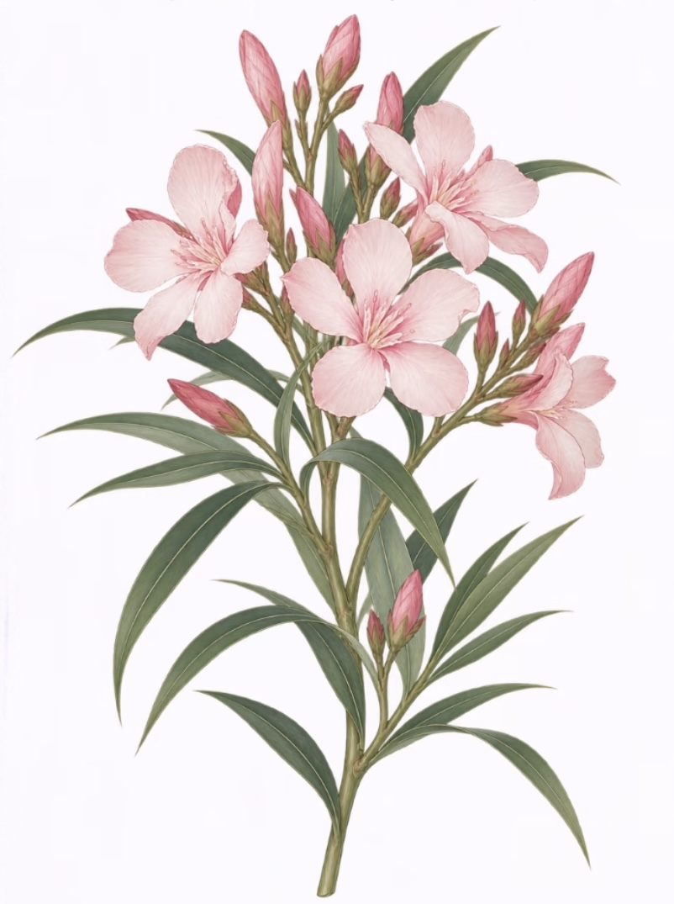

NERIUM OLEANDER · BOTANICAL MONOGRAPH
ARCHIVE REF. NO. 0824
NERIUM
SECURITY SPECIFICATION // 0.08 PPM TOXICITY
SAFE DISTANCE REQUIRED · DO NOT INGEST
System Alert · 植物学防御协议
>
>
了解风险
>
执意闯入
[提示] 你已在安全线外驻足。但它依然静默盛放，红白相生。
夹竹桃植觉档案
Nerium Oleander · Herbarium
科学插画原件 · 标本延长线引申 · 重力感应悬摆
STATUS: INTRUSION RECORDED
DEFENSE COUNTDOWN
00000000

NERIUM OLEANDER · BOTANICAL RECORD
01
盛开花冠
02
狭长披针叶
03
直立木质茎
04
纺锤花苞
05
切端基部
COROLLA
PART 01 · 盛开花冠
✕ 收起
Blooming Corolla
PART 01 · 盛开花冠
自我介绍
Corolla
Nerium oleander · 生理构造剖析
内容载入中…
“安全线不仅保护了植株的静止，也保护了观察者的体面。”
陀螺仪物理摆动：
晃动设备 / 鼠标划过
感受标本微摆
FATAL GLITCH: MEMORY LEAK [BUFFER_RELOAD]